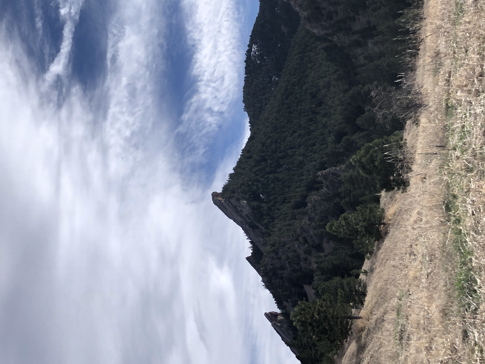
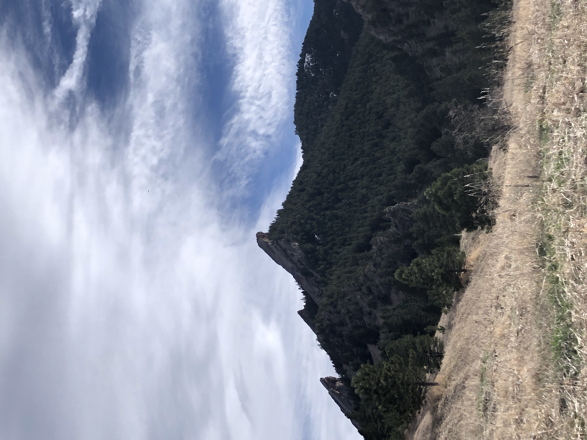
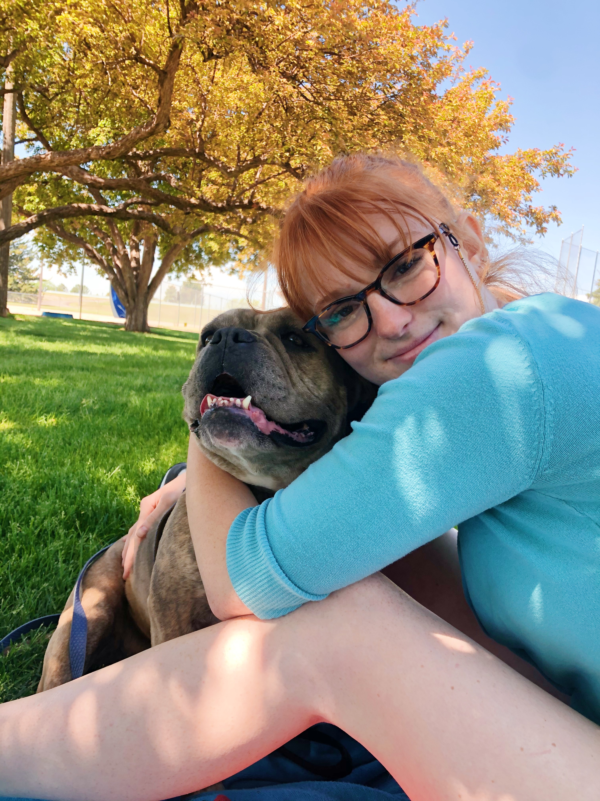

Hello!
 

My name is Priscilla Rain Hopper. I am a third-year Information Science (B.S.) major at the University of Colorado Boulder. I've just recently been admitted to the BAM program for Information Science granting with one extra year of college, I'll recieve a graduate degree. (VERY EXCITING).
Also, I am the President of the Boulder chapter of The Women’s Network, overseeing the executive board, hosting chapter meetings, moderating speaker events, and more.
Hobbies + Fun Facts

This is my dog Metro Boomin', named after a famous producer. She and I are two big peas in a pod and for obvious reasons, we're obsessed with each other.
In terms of hobbies, I've been playing the guitar for about 13 years now and own a collectors edition Gold Top Les Paul. Aside from Metro, that's my biggest flex.
I just recently got my drivers license!! Technically 4 years late, but better late than never! And, according to some other students in this class who've helped me learn how to drive, "it's a lot less scarier than I was expecting" -- yes, direct quote.